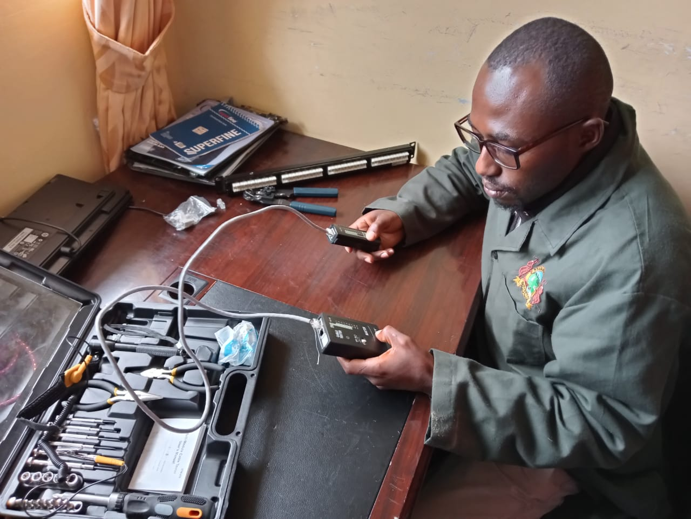

This is Me
I am FullStack Developer
Skilled in both the frontend (client-side) and backend (server-side) aspects of Web Applications Development.
What Drives Me
- Passion for Problem-Solving and Innovation using ICT in a creative manner hence solve problems facing the society.
- Deep curiosity about new tools, frameworks, and methodologies in ICT hence keeping me updated and relevant in the fast paced, dynamic digital computing world.
- Self and Continuous Improvement which makes me to research intensively and stretch my skills thus tackle challenging projects.
- Collaboration and Teamwork through brainstorming ideas, sharing knowledge, and learning from teammates and expert developers.
- User-Centric Development whereby I build software solutions that meets the needs and requirements of users (clients).
- Contribution to the Developer Community by giving back to the broader tech community through uploading projects in Github, sharing knowledge through consultations, and mentoring junior developers.

Why Work With Me
- Commitment to Delivering High-Quality Software that meets both functional and technical requirements.
- Problem-Solving Focus whereby I approach each task with a solution-oriented mindset.
- Collaborative and Team-Oriented whereby I strive to build a strong working relationship that fosters problem-solving and creativity.
- Adaptability whereby I constantly and habitually learn new technology (tools, languages, and frameworks) to ensure that the solutions I implement are innovative and future-proof.
- User-Centric Development whereby I develop software with a user-first mindset by focusing on user requirements and valuing their feedback.
- Open to New Ideas and Feedback whereby I am receptive and open-minded to new ideas and constructive feedback.
Hobbies
- Playing badminton and table tennis.
- Watching documentaries.
- Listening to classical music.
- Walking and enjoying nature.
My Journey
Born in Murang’a County, I can genuinely confirm that my beginnings were very humble. Regardless, my journey as a software engineer began in 2015 when I started a cyber cafe business in Naivasha. While running the cafe, I swiftly realized how vital technology was in streamlining operations and providing better services to customers. Managing day-to-day tasks using a simple system that was installed by an IT student triggered my interest in software systems and automation.
I started watching tutorials about computers, software development and networks on the YouTube platform since I had full access to WI-FI. In the course of this self-learning, I was able to solve a variety of ICT challenges that were presented to me by customers. Their satisfaction motivated me to deepen my skills hence made a decision of joining Mount Kenya University (MKU) to get expertise knowledge and certification in Information Technology.
It was in MKU where I cultivated a strong foundation in Information Technology and honed my ICT skills. Throughout my academic years, I thrived in collaborative projects, developing both technical expertise and a passion for coding. I embraced new technologies, diving into web development, systems development, algorithms, and data structures.
After graduating with a Bachelor of Science in Information Technology Degree from MKU, I applied my skills in real-world projects, building scalable and efficient software solutions to clients. My experience has polished my ability to quickly adjust, work in teams, and deliver high-quality, user-centric applications. However, my major focus is on continuous learning and improving my career as a Software Developer.
My future plans as a Software Developer is planning to oversee collaborative projects that incorporate AI into large-scale systems, emphasizing real-time processing and deployment. I intend to spearhead advancements in AI-driven systems, contribute to open-source AI initiatives, and guide the development of emerging developers. Ultimately, I aim to manage teams in the creation of state-of-the-art AI products, ensuring ethical, scalable, and sustainable solutions.
Resume
This is my summarized resume related to my profession as a Fullstack Developer.
Summary
Gerald Muchira
Innovative, quality-conscious, and attention to detail driven Software Developer with 5+ years of experience designing and developing websites and IT systems as per the clients’ requirements.
Education
Bachelor of Science in Information Technology
2021 - 2024
Mount Kenya University, Thika
The four years attended in MKU equipped me with ample knowledge to design and develop websites and Information Technology systems to meet clients needs.
Membership to Professional Bodies
ICT Authority Kenya
2024
Ministry of Information Communication and Technology
Duly accredited ICT professional ready to work in public agencies in accordance with the GoK IT Governance Standard of 2020.
Professional/Technical Qualifications
Certificate Statistical Data Analysis (SPSS & STATA)
May & June 2023
KESAP Research Centre
The training equipped me with skills of analyzing statistical data using SPSS & STATA software.
Certificate in Chatbot Development
June & July 2023
IBM
The training equipped me with skills of creating a chatbot from scratch using the IBM Watson Assistant platform and integrate it in a website or a mobile phone.
Partnerships & Collaborations
- Mount Kenya University, Thika.
- Fitflex ICT Solutions, Nairobi.
- Vikima Cleaners, Nairobi.
Gallery
Unlocking Infinite Possibilities
Roger from Chad
At MKU Graduation Pavillion